Lab 2
Contents
%Lab 2.1.1
1. How many hits did 'hbb' get? url was: https://www.ncbi.nlm.nih.gov/gene/?term=hbb Found 31 databases for hbb Results Gene-1561 and Nucleotide-9006
3. hbb AND human[orgn] found 27 databases Gene 89 Nucleotide 280
4. Explore the HBB hemoglobin subunit beta record http://www.ncbi.nlm.nih.gov/gene/3043
5. hbb, human, and RefSeqGene query https://www.ncbi.nlm.nih.gov/nuccore/28380636
6. We aim to obtain whole region and do analysis of 81,706 bp of linear DNA
Lab 2.1.2
1. Generate one second of a cosine
ws = 10; % Hz Fs = 100; % Hz % Assign signal to x and have tt as time axis t = 0:1/Fs:1; x = cos(2*pi*ws*t); % Create a cosine wave with frequency 10Hz, sampled at 100 Hz tt = linspace(0,1000) % From 0 to 1000 seconds figure(1); plot(t,x) % Plot the cosine wave title({'Cosine'}) xlabel('time(seconds)') ylabel('Amplitude')
tt =
1.0e+03 *
Columns 1 through 7
0 0.0101 0.0202 0.0303 0.0404 0.0505 0.0606
Columns 8 through 14
0.0707 0.0808 0.0909 0.1010 0.1111 0.1212 0.1313
Columns 15 through 21
0.1414 0.1515 0.1616 0.1717 0.1818 0.1919 0.2020
Columns 22 through 28
0.2121 0.2222 0.2323 0.2424 0.2525 0.2626 0.2727
Columns 29 through 35
0.2828 0.2929 0.3030 0.3131 0.3232 0.3333 0.3434
Columns 36 through 42
0.3535 0.3636 0.3737 0.3838 0.3939 0.4040 0.4141
Columns 43 through 49
0.4242 0.4343 0.4444 0.4545 0.4646 0.4747 0.4848
Columns 50 through 56
0.4949 0.5051 0.5152 0.5253 0.5354 0.5455 0.5556
Columns 57 through 63
0.5657 0.5758 0.5859 0.5960 0.6061 0.6162 0.6263
Columns 64 through 70
0.6364 0.6465 0.6566 0.6667 0.6768 0.6869 0.6970
Columns 71 through 77
0.7071 0.7172 0.7273 0.7374 0.7475 0.7576 0.7677
Columns 78 through 84
0.7778 0.7879 0.7980 0.8081 0.8182 0.8283 0.8384
Columns 85 through 91
0.8485 0.8586 0.8687 0.8788 0.8889 0.8990 0.9091
Columns 92 through 98
0.9192 0.9293 0.9394 0.9495 0.9596 0.9697 0.9798
Columns 99 through 100
0.9899 1.0000
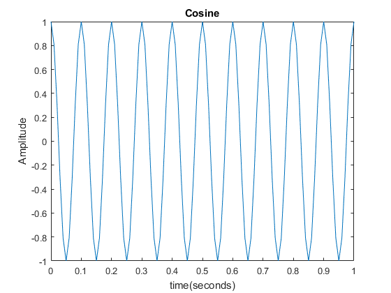 2. Take FFT, 64 points (1-65)
fft_out = fft(x(1:64)); % Take fft of signal and then shift zero-frequency to center of spectrum
3. Plot magnitude of 64-point FFT at range of 0 to 63
figure(2); title('64-FFT') xlabel('Frequency') ylabel('Amplitude') plot((0:63), abs(fft_out)/length(fft_out))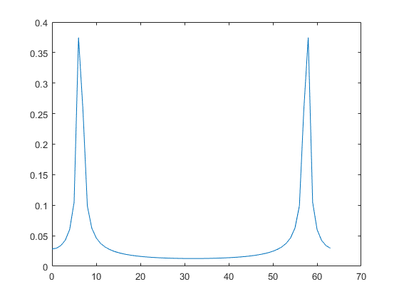
From the magnitude plot, we can see that the x axis does not reflect the signal properly. The two large peaks should represent the 10 Hz frequency of the signal, and ideally fft should be centered at 0.
dF = Fs/64;
freq = -Fs/2:dF:Fs/2-dF;
figure(3);
plot(freq, abs(fft_out)/64) % Plot fft of the signal before shifting the graph
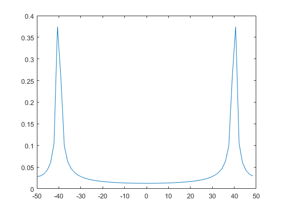 From the plot, we can see that the frequency
fft_out = fftshift(fft(x(1:64))); figure(4); %The shifted plot which is centered at 0 title('Frequency components centered about 0') xlabel('Frequency') ylabel('Amplitude') plot(freq, abs(fft_out)/64)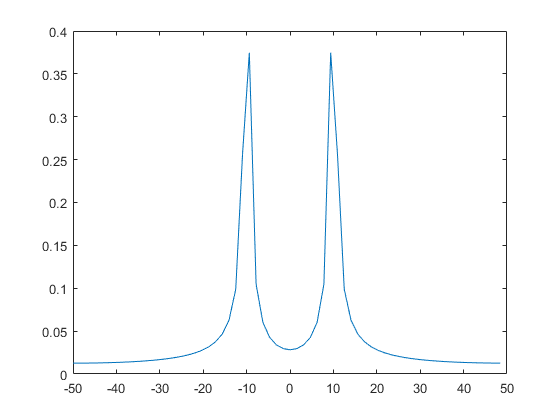
%N=1024 ; 1024 DFT ws = 10; % Hz Fs = 1500; % Hz % Assign signal to x and have tt as time axis t = 0:1/Fs:1; x = cos(2*pi*ws*t); fft_out = fft(x(1:1024)); % Take fft of signal and then shift zero-frequency to center of spectrum
3. Plot magnitude of 1024-point FFT at range of 0 to 1023
figure(5); title('64-FFT') xlabel('Frequency') ylabel('Amplitude') plot((0:1023), abs(fft_out)/length(fft_out))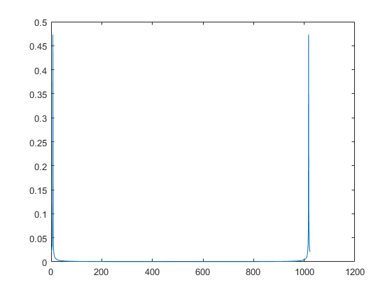
From the magnitude plot, we can see that the x axis does not reflect the signal properly. The two large peaks should represent the 10 Hz frequency of the signal, and ideally fft should be centered at 0.
dF = Fs/1024;
freq = -Fs/2:dF:Fs/2-dF;
figure(6);
plot(freq, abs(fft_out)/1024) % Plot fft of the signal before shifting the graph
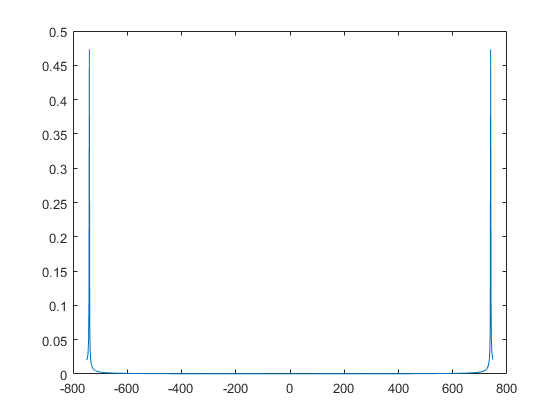 From the plot, we can see that the frequency
fft_out = fftshift(fft(x(1:1024))); figure(7); %The shifted plot which is centered at 0 title('Frequency components centered about 0') xlabel('Frequency') ylabel('Amplitude') plot(freq, abs(fft_out)/1024)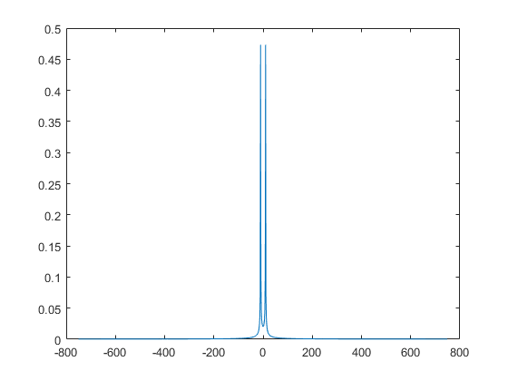
Lab2.2.1
%1 hbb = genbankread('hbb_region_chr11.gb'); CDS = hbb.CDS; %Number of CDS regions in this sequence length(hbb.CDS) %2 length(hbb.CDS(1)) CDSrange = hbb.CDS.indices; A=hbb.Sequence(1); %Coding and non coding sequence [coding, noncoding] = separateCDS(hbb.Sequence, CDS(1).indices); %3 %Input taken from the user for indice %user enters 2 n=2; %Using the function separateCDS.m that was created %{ function [coding, noncoding] = separateCDS(sequence, CDS_indices) % [coding, noncoding] = separateCDSregion(hbb.Sequence, CDS(1).indices) % [coding, noncoding] = separateCDSregion(Sequence, CDS_indices) coding = []; % Create empty arrays to store the coding and noncoding sequences noncoding = []; % Find coding regions and store them for i=1:2:length(CDS_indices)-1 coding = [coding, sequence(CDS_indices(i):CDS_indices(i+1))]; end % Find noncoding regions and store them for i=2:2:length(CDS_indices)-1 noncoding = [noncoding, sequence(CDS_indices(i):CDS_indices(i+1))]; end %} [coding, noncoding] = separateCDS(hbb.Sequence, CDS(n).indices); %Lab 2.2.3 coding_A = (upper(coding)=='A'); % find A bases and set them to 1 coding_T = (upper(coding)=='T'); % find T bases and set them to 1 coding_G = (upper(coding)=='G'); % find G bases and set them to 1 coding_C = (upper(coding)=='C'); % find C bases and set them to 1 % FFT of the sequence coding_FT = abs(fft(coding_A,1024)).^2+abs(fft(coding_T,1024)).^2+abs(fft(coding_G,1024)).^2+abs(fft(coding_C,1024)).^2; coding_FT(1:10)=0; coding_FT(end-10:end)=0; figure(8) plot(coding_FT(100:1000)); title('Coding Sequence'); %xlim([100 1000]); noncoding_A = (upper(coding)=='A'); % find A bases and set them to 1 noncoding_T = (upper(coding)=='T'); % find T bases and set them to 1 noncoding_G = (upper(coding)=='G'); % find G bases and set them to 1 noncoding_C = (upper(coding)=='C'); % find C bases and set them to 1 % FFT of the sequence noncoding_FT = abs(fft(noncoding_A,1024)).^2+abs(fft(noncoding_T,1024)).^2+abs(fft(noncoding_G,1024)).^2+abs(fft(noncoding_C,1024)).^2; noncoding_FT(1:10)=0; noncoding_FT(end-10:end)=0; figure(9) title('Non-Coding Sequence'); plot(noncoding_FT);
ans =
5
ans =
1
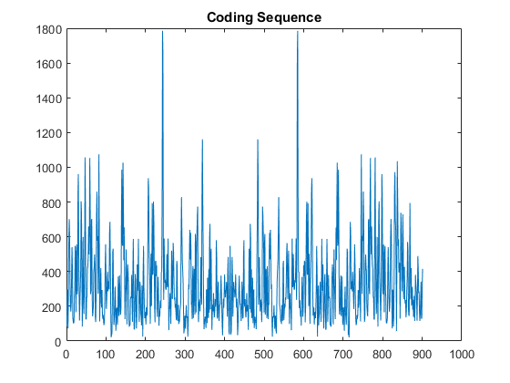 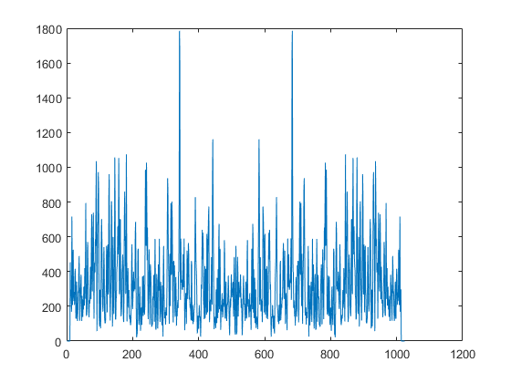 %Lab 2.3.1 %function -threebasefreq %{ function [threebase] = threebasefreq_stft (DNA_SEQ, WINDOW_LENGTH, NFFT) sequence_length = length(DNA_SEQ); threebase = []; % Convert sequence to binary for i = 1:sequence_length-WINDOW_LENGTH+1 b = WINDOW_LENGTH; A = (upper(DNA_SEQ(i:i+b-1))=='A'); % find A bases and set them to 1 T = (upper(DNA_SEQ(i:i+b-1))=='T'); % find T bases and set them to 1 G = (upper(DNA_SEQ(i:i+b-1))=='G'); % find G bases and set them to 1 C = (upper(DNA_SEQ(i:i+b-1))=='C'); % find C bases and set them to 1 % FFT of the window FT = abs(fft(A,NFFT)).^2+abs(fft(T,NFFT)).^2+abs(fft(G,NFFT)).^2+abs(fft(C,NFFT)).^2; threebase = [threebase, FT(floor(NFFT/3))]; end %} Threebaseperiodicity_vs_position = threebasefreq_stft (hbb.Sequence,100,1024); figure(10) Threebaseperiodicity_vs_position(1:10)=0; Threebaseperiodicity_vs_position(end-10:end)=0; plot(Threebaseperiodicity_vs_position) title('Threebaseperiodicity(100)'); Threebaseperiodicity_vs_position = threebasefreq_stft (hbb.Sequence,1000,1024); Threebaseperiodicity_vs_position(1:10)=0; Threebaseperiodicity_vs_position(end-10:end)=0; figure(11) plot(Threebaseperiodicity_vs_position) title('Threebaseperiodicity(1000)');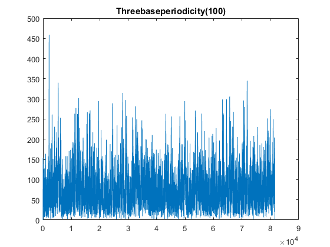 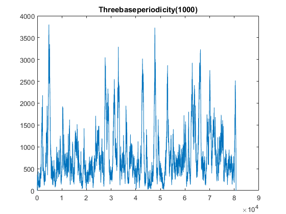